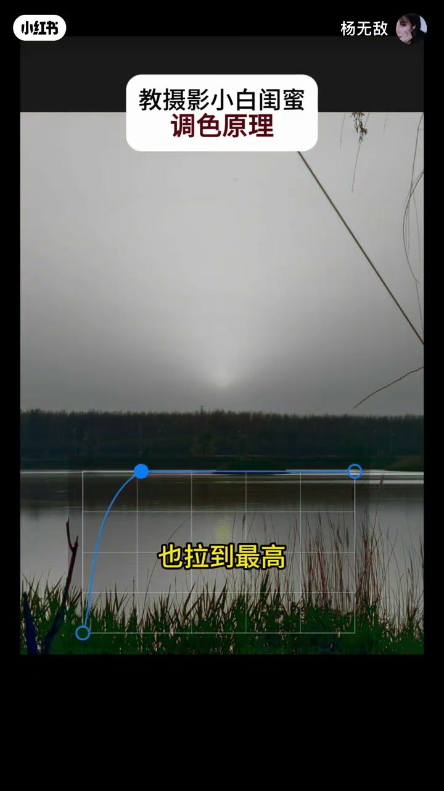
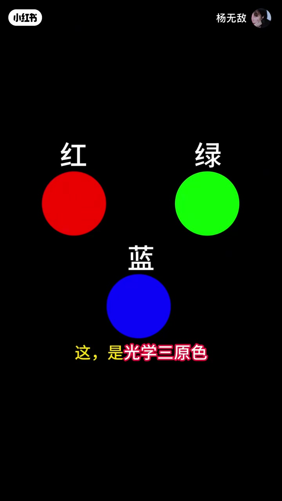
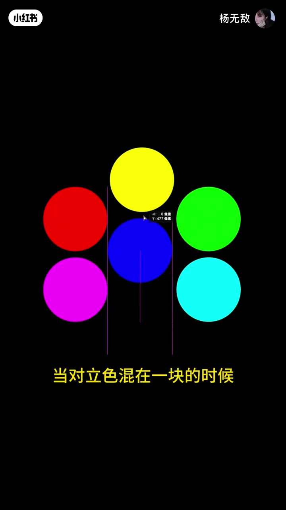
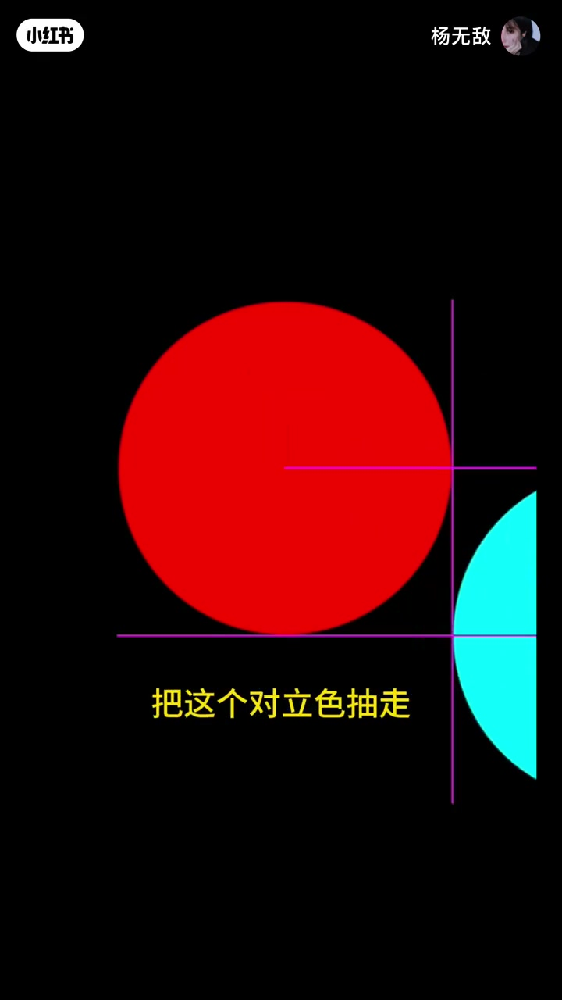
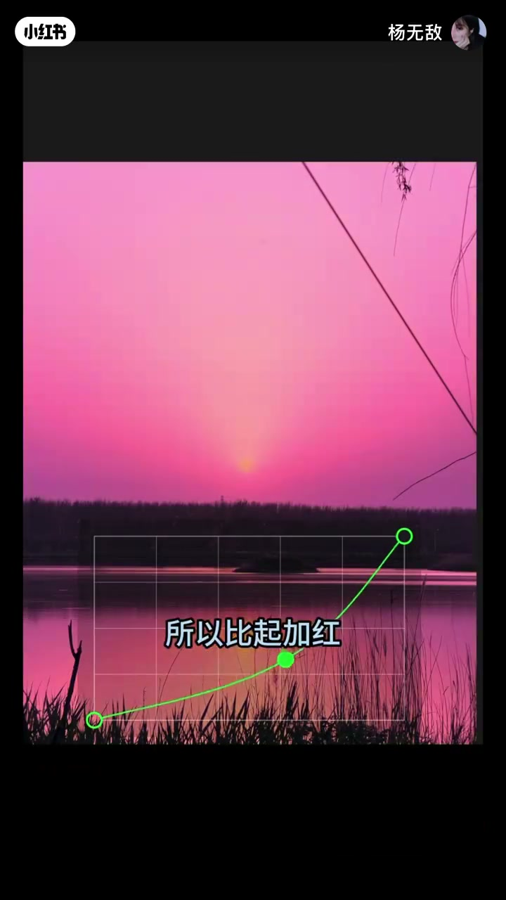
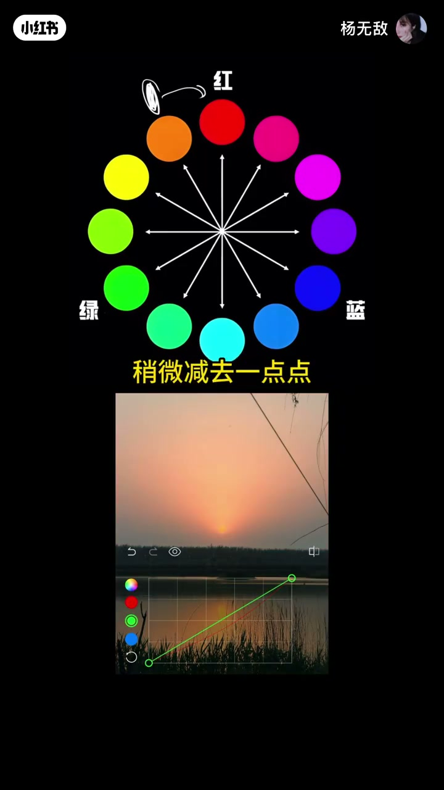

内容要点
一支 1 分 47 秒的调色原理课：从「夕阳想调更红却越调越怪」的困惑出发，用光学三原色讲清对立色（互补色）的关系。核心是颠覆直觉的一句话——调色不是做加法而是做减法：照片发灰不是颜色不够，而是对立色混进来了，把对立色抽走，你要的颜色自然透出来。最后用「近少远多」教你把世界调成任意颜色。
知识结构
夕阳想调更红，直接把红色拉到最高特别怪异；再把绿色蓝色也拉到最高，反而白了。
光学三原色两两叠加得到三个颜色，共六个互为对立的颜色。神奇的是对立色混在一起反而变成白色。
照片发白发灰不显色，不是你想要的颜色不够，而是它的对立色混进来了。调色不是做加法，而是做减法。
夕阳想更红，其实不是加红色，而是减去它的对立色——青色（蓝和绿混合得到）。比起加红，更重要的是减去蓝和绿。
调橙色看距离：离红色最近少减，离蓝色最远多减。明白这一点，就能把世界调成任意想要的颜色，甚至还原被舞台灯干扰的肤色。
调色的底层是颜色对立关系：对立色混合变白。所以调色做减法而非加法——照片发灰是混进了对立色，抽走它，目标颜色自然显现；按「近少远多」控制各色增减量。
00:00-00:17越调越怪的红色
视频从一个调色困境开始：「我想把这个夕阳调得更红，可是调完红色咋这么怪啊？」
「那我给你看个神奇的。」主讲人现场演示：「我们直接把红色拉到最高——特别怪异，对吧？但这个时候我们把绿色和蓝色也拉到最高——啊，怎么反而白了？」这个反直觉的现象，正是整堂课的引子。


00:17-00:35光学三原色与对立色
「来，今天我给你讲讲调色原理。这是光学三原色，把它们两两叠加，我们又得到了三个颜色。」听者嫌复杂：「你别闹了，我就想调个图，这也太复杂了。」
「哎，不难。你看，其实不就是六个互为对立的颜色吗？」主讲人把图简化，「神奇之处在于，当对立色混在一块的时候，反而变成了白色。」三对颜色：红对青、绿对品红、蓝对黄——对立色混合，彼此抵消归于白。



00:35-00:51调色是做减法
「这代表啥？」主讲人讲透关键：「有的时候我们的照片发白发灰不显色，并不是因为你想要的那种颜色不够多，而是它的对立色混进来了。」
「把这个对立色抽走，你要的颜色自然而然就会透出来。意思就是，调色不是做加法，而是做减法。」一句话颠覆了「颜色不够就加颜色」的直觉。


00:51-00:66夕阳更红：减去蓝和绿
「比如我想把夕阳调得更红，其实不是要加红色，而是要减去它的对立色。」「红色的对立色是青色，而青色是蓝和绿混合得到的。」
「所以比起加红，更重要的是减去蓝和绿。」听者夸「聪明」——看似是在增加红色，真正的做法反而是把混进来的蓝绿抽掉，让红自己透出来。


00:66-01:47近少远多：调出任意颜色
「哎，可是如果我想调的是橙色，而不是那种纯红的颜色呢？」「好问题，就看距离。你看这张图——橙色离红色最近，离绿色稍微远点，离蓝色最远。」
「你就记住：近少远多。」主讲人给出实操：「比如你想调橙色，咱们就以橙色为原点，把离得最近的红色稍微减去一点点，绿色稍远就多减去一点，而蓝色最远，减去的最多。这样调出来就是橙色。」
「明白了这一点，你就可以把世界调成任意一种你想要的颜色，甚至可以还原被舞台灯干扰的肤色、把照片调成电影海报。」收尾依旧轻松：「好，今天先讲这么多，不懂的再问我。」


完整转录（64段）
以下文本由 Whisper medium 模型自动转录，可能存在少量识别误差，已尽可能修正。
我想把这个夕阳调得更红
可是调完红色咋这么怪啊
那我给你看个神奇的
我们直接把红色拉到最高
特别怪异
对吧
但这个时候我们把绿色和蓝色也拉到最高
啊 怎么反而白了
来 今天我给你讲讲调色原理
这是光学三原色（保留）
把它们两两叠加
我们又得到了三个颜色
你别闹了
我就想调个图
这也太复杂了
哎 不难
你看
其实不就是六个互为对立的颜色吗
神奇之处在于
当对立色（保留）混在一块的时候
反而变成了白色
这代表啥
这代表着
有的时候我们的照片发白发灰不显色
并不是因为你想要的那种颜色不够多
而是它的对立色（保留）混进来了
把这个对立色（保留）抽走
你要的颜色自然而然就会透出来
意思就是调色不是做加法
而是做减法
比如我想把夕阳调得更红
其实不是要加红色
而是要减去它的对立色（保留）
红色的对立色（保留）是青色
而青色是蓝和绿混合得到的
所以比起加红
更重要的是减去蓝和绿
聪明
哎 可是如果我想调的是橙色
而不是那种纯红的颜色呢
好问题
就看距离
你看这张图
橙色离红色最近
离绿色稍微远点
离蓝色最远
你就记住
近少远多（保留）
比如你想调橙色
那么咱们就以橙色为原点
把离的最近的红色稍微减去一点点
绿色稍远
那就多减去一点
而蓝色最远
减去的最多
这样调出来就是橙色
明白了这一点
你就可以把世界调成任意一种
你想要的颜色
甚至可以还原被舞台灯干扰的肤色
把照片调成电影海报
好
今天先讲这么多
不懂得再问我